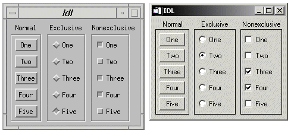
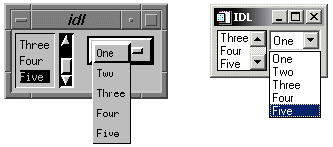
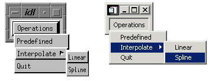
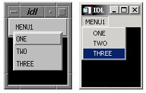
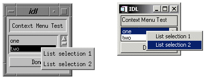

Menus allow a user to select one or more options from a list of options. IDL widgets allow you to build a number of different types of menus for your widget application.
This section discusses the following different types of menus:
One approach to menu creation is to build an array of buttons. With a button menu, all options are visible to the user all the time. To create a button menu, do the following:
Because menus of buttons are common, IDL provides a compound widget named CW_BGROUP to create them. Using CW_BGROUP rather than a series of calls to WIDGET_BUTTON simplifies creation of a menu of buttons and also simplifies event handling by providing a single event structure for the group of buttons. For example, the following IDL statements create a button menu with five choices:
values = ['One', 'Two', 'Three', 'Four', 'Five']
base = WIDGET_BASE()
bgroup = CW_BGROUP(base, values, /COLUMN)
WIDGET_CONTROL, base, /REALIZE
In this example, one call to CW_BGROUP replaces five calls to WIDGET_BUTTON.
Buttons in button groups normally act as independent entities, returning a selection event (a one in the select field of the event structure) or similar value when pressed. Groups of buttons can also be made to act in concert, as either exclusive or non-exclusive groups. In contrast to normal button groups, both exclusive and non-exclusive groups display which buttons have been selected.
Exclusive button groups allow only one button to be selected at a given time. Clicking on an unselected button deselects any previously-selected buttons. Non-exclusive button groups allow any number of buttons to be selected at the same time. Clicking on the same button repeatedly selects and deselects that button. The following code creates three button groups. The first group is a “normal” button group as created in the previous example. The next is an exclusive group, and the third is a non-exclusive group.
values = ['One', 'Two', 'Three', 'Four', 'Five']
base = WIDGET_BASE(/ROW)
bgroup1 = CW_BGROUP(base, values, /COLUMN, $
LABEL_TOP='Normal', /FRAME)
bgroup2 = CW_BGROUP(base, values, /COLUMN, /EXCLUSIVE, $
LABEL_TOP='Exclusive', /FRAME)
bgroup3 = CW_BGROUP(base, values, /COLUMN, /NONEXCLUSIVE, $
LABEL_TOP='Nonexclusive', /FRAME)
WIDGET_CONTROL, base, /REALIZE
The widget created by this code is shown in the following figure:
|
 |
A second approach to menu creation is to provide the user with a list of options in the form of a scrolling or drop-down list. A scrolling list is always displayed, although it may not show all items in the list at all times. A drop-down list shows only the selected item until the user clicks on the list, at which time it displays the entire list. Both lists allow only a single selection at a time.
The following example code uses the WIDGET_LIST and WIDGET_DROPLIST functions to create two menus of five items each. While both lists contain five items, the scrolling list displays only three at a time, because we specify this with the YSIZE keyword.
values = ['One', 'Two', 'Three', 'Four', 'Five']
base = WIDGET_BASE(/ROW)
list = WIDGET_LIST(base, VALUE=values, YSIZE=3)
drop = WIDGET_DROPLIST(base, VALUE=values)
WIDGET_CONTROL, base, /REALIZE
The widget created by this code is shown in the following figure:
|
 |
A third approach to menu creation involves menus that appear as a single button until the user selects the menu, at which time the menu pops up to display the list of possible selections. Buttons in such a pulldown menu can activate other pulldown menus to any desired depth. The method for creating a pulldown menu is as follows:
Because pulldown menus are common, IDL provides a compound widget named CW_PDMENU to create them. Using CW_PDMENU rather than a series of calls to WIDGET_BUTTON simplifies creation of a pulldown menu in the same way the CW_BGROUP simplifies the creation of button menus.
The following example uses CW_PDMENU to create a pulldown menu. First, we create an array of anonymous structures to contain the menu descriptions.
desc = REPLICATE({ flags:0, name:'' }, 6)
The desc array contains six copies of the empty structure. Each structure has two fields: flags and name. Next, we populate these fields with values:
desc.flags = [ 1, 0, 1, 0, 2, 2 ]
desc.name = [ 'Operations', 'Predefined', 'Interpolate', $
'Linear', 'Spline', 'Quit' ]
The value of the flags field specifies the role of each button. In this example, the first and third buttons start a new sub-menu (values are 1), the second and fourth buttons are plain buttons with no other role (values are 0), and the last two buttons end the current sub-menu and return to the previous level (values are 2). The value of the name field is the value (or label) of the button at each level.
base = WIDGET_BASE()
menu = CW_PDMENU(base, desc)
WIDGET_CONTROL, base, /REALIZE
The format of the menu description used by CW_PDMENU in the above example requires some explanation. CW_PDMENU views a menu as consisting of a series of buttons, each of which can optionally lead to a sub-menu. The description of each button consists of a structure supplying its name and a flag field that tells what kind of button it is (starts a new sub-menu, ends the current sub-menu, or a plain button within the current sub-menu). The description of the complete menu consists of an array of such structures corresponding to the flattened menu.
Compare the description used in the code above with the result shown in the following figure.
|
 |
A fourth approach to providing menus in your widget application is to attach the menus directly to the top-level base widget. Menus attached to a top-level base widget are created just like pulldown menus created from button widgets, but they do not appear as buttons. Menus created in this way are children of a special sub-base of the top-level base, created by specifying the MBAR keyword when the top-level base is created.
For example, the following code creates a top-level base widget and attaches a menu titled MENU1 to it. MENU1 contains the choices ONE, TWO, and THREE.
base = WIDGET_BASE(MBAR=bar)
menu1 = WIDGET_BUTTON(bar, VALUE='MENU1', /MENU)
button1 = WIDGET_BUTTON(menu1, VALUE='ONE')
button2 = WIDGET_BUTTON(menu1, VALUE='TWO')
button3 = WIDGET_BUTTON(menu1, VALUE='THREE')
draw = WIDGET_DRAW(base, XSIZE=100, YSIZE=100)
WIDGET_CONTROL, base, /REALIZE
The resulting widget is shown in the following figure:
|
 |
Context-sensitive menus (also referred to as context menus or pop-up menus ) are hidden until a user performs an action to display the menu. When summoned, the appearance of a context menu is similar to that of a menu created in a floating, modal base. The behavior of a context menu is the same as that of a menu on a menu bar; when the user clicks one of the menu’s buttons, a button event is generated and the menu is dismissed. If the user clicks outside the context menu, it is dismissed without generating any events.
|
 |
By convention, context-sensitive menus in IDL widget applications are displayed when the user clicks the right mouse button. Several IDL widget primitives — base, draw, list, table, text, and tree widgets — can be configured to generate events when this occurs. The mechanism used to generate right mouse button events is different for draw widgets than for the other types; these differences are discussed below.
Note: While it is customary to display context-sensitive menus when the user clicks the right mouse button, IDL’s mechanism for displaying the menus is quite general, and can be invoked under many circumstances. Examples in this section will discuss the common usage.
To create a context-sensitive menu in a widget application, do the following:
Context menus are contained within a special base widget created with the CONTEXT_MENU keyword. A base widget used as the base for a context menu must have as its parent widget one of the following widget types:
The process for creating a context menu is similar to that for creating a menu for a top-level base (a menubar). Create menu entries on the base widget using the WIDGET_BUTTON function. Context menu entries can display sub-menus (using the MENU keyword to WIDGET_BUTTON or the CW_PDMENU compound widget) or appear as separators (using the SEPARATOR keyword to WIDGET_BUTTON).
The following code snippet illustrates a very simple context menu attached to a base widget:
topLevelBase = WIDGET_BASE(/CONTEXT_EVENTS)
contextBase = WIDGET_BASE(topLevelBase, /CONTEXT_MENU)
button1 = WIDGET_BUTTON(contextBase, VALUE='First button')
button2 = WIDGET_BUTTON(contextBase, VALUE='Second button')
In order to display the context menu at the appropriate time, the widget that serves as the parent for the context menu base must be configured to generate an event when the user clicks the right mouse button over that widget. For base, list, property sheet, table, text, and tree widgets, this is accomplished by setting the CONTEXT_EVENTS keyword when creating the widget, or by enabling context events by setting the CONTEXT_EVENTS keyword to WIDGET_CONTROL. When a user clicks the right mouse button over an appropriately configured base, list, text, or tree widget, a widget event with the following structure is generated:
{WIDGET_CONTEXT, ID:0L, TOP:0L, HANDLER:0L, X:0L, Y:0L,
ROW:0L, COL:0L}
The first three fields are the standard fields found in every widget event. The X and Y fields give the device coordinates at which the event occurred, measured from the upper left corner of the base widget. The ROW and COL fields return meaningful information for table widgets and values of zero (0) for other widgets.
For table widgets, ROW and COL indicate the zero-based index of the cell that was clicked on when the context menu was initiated. The upper-left data cell has a row and column index of 0,0. Row and column headers have indices of -1. If the context menu event takes place outside of all table cells and headers, then both ROW and COL will have values of -1.
Note: When working with context menu events, it is important to notice that the event structure does not have a TYPE field, so special code is needed for the property sheet event handler. Instead of keying off the TYPE field, use the structure’s name. An example is provided in the WIDGET_PROPERTYSHEET “Example” section in the IDL Reference Guide .
For draw widgets, button events are handled differently. Set the BUTTON_EVENTS keyword to WIDGET_DRAW (or the DRAW_BUTTON_EVENTS keyword to WIDGET_CONTROL) to generate widget events with the following structure:
{ WIDGET_DRAW, ID:0L, TOP:0L, HANDLER:0L, TYPE: 0, X:0L, Y:0L, PRESS:0B, RELEASE:0B, CLICKS:0, MODIFIERS:0L, CH:0, KEY:0L }
The first three fields are the standard fields found in every widget event. The X and Y fields give the device coordinates at which the event occurred, measured from the lower left corner of the drawing area. PRESS and RELEASE are bitmasks that represent which of the left, center, or right mouse button was pressed: that is, a value of 1 (one) represents the left button, 2 represents the middle button, and 4 represents the right button. (See Widget Events Returned by Draw Widgets for a complete description of the WIDGET_DRAW event structure.)
Once the parent widget of your context menu is configured to generate events when the user clicks the right mouse button, you must detect the events in your event handler routine. For base, list, text, and tree widgets, your event handler should examine the event structure name to determine the type of event; if the event is of type WIDGET_CONTEXT, you know that the right mouse button was pressed.
To detect a right mouse button click in a base, list, text, or tree widget (with context events enabled), use the following test:
IF (TAG_NAMES(event, /STRUCTURE_NAME) EQ 'WIDGET_CONTEXT') THEN BEGIN
; process event here
ENDIF
For draw widgets, your event handler should examine the WIDGET_DRAW event structure; if the value of the RELEASE field is equal to four, you know that the right mouse button was pressed and released.
To detect a right mouse button click in a draw widget (with button events enabled), use the following test:
IF (event.release EQ 4) THEN BEGIN
; process event here
ENDIF
Note that in a complex widget application, your event handler may first need to determine whether the event came from a draw widget. In this case, you may need a test that looks like this:
IF (TAG_NAMES(event, /STRUCTURE_NAME) EQ 'WIDGET_DRAW') THEN BEGIN
IF (event.release EQ 4) THEN BEGIN
; process event here
ENDIF
ENDIF
When your event handler routine detects a right mouse button click, use the WIDGET_DISPLAYCONTEXTMENU procedure to display the context menu. This routine takes as its parameters the widget ID of the widget for which the context menu is to be displayed, the X and Y coordinates at which the menu should be displayed, and the widget ID of the context menu base widget that holds the context menu. See WIDGET_DISPLAYCONTEXTMENU for additional information.
In all cases, the ID field of the event structure generated by the right mouse button click contains the widget ID of the widget whose context menu is to be displayed. Similarly, the event structure contains the location of the mouse click in the X and Y fields; in most cases, this is where you will want to display the context menu.
The following code fragment would display a context menu held in a base widget whose widget ID is contextBase at the location of the user’s right mouse click:
WIDGET_DISPLAYCONTEXTMENU, event.ID, event.X, $
event.Y, contextBase
In a simple application with only one context menu, you know the widget ID of the context menu base widget to be displayed. In a real application, however, it is likely that more than one context menu exists. See Determining Which Context Menu to Display , below, for tips on dealing with multiple context menus.
Once the context menu is displayed, processing events that flow from it is the same as processing events from any other menu. The individual buttons that make up the menu can have event handler routines associated with them; these routines are then invoked when the user clicks on one of the menu buttons. See the Context Menu Example below for a simple illustration of menu button event processing.
In a real application, you may have multiple context menus available to display when the user right-clicks on different portions of the user interface. One way to handle this situation is to have your event handler keep track of which context menu should be displayed for each widget. Consider a widget hierarchy that contains a text widget and a list widget, both of which have associated context menus:
topLevelBase = WIDGET_BASE(/COLUMN, XSIZE = 120, YSIZE = 80)
wText = WIDGET_TEXT(topLevelBase, VALUE="Context Menu Test", $
/CONTEXT_EVENTS)
wList = WIDGET_LIST(topLevelBase, VALUE=['one','two', 'three'], $
/CONTEXT_EVENTS)
contextBase1 = WIDGET_BASE(wText, /CONTEXT_MENU, $
UNAME="tContextMenu")
contextBase2 = WIDGET_BASE(wList, /CONTEXT_MENU, $
UNAME="lContextMenu")
Now the application’s event handler, after detecting a right mouse button click with the
IF (TAG_NAMES(event, /STRUCTURE_NAME) EQ 'WIDGET_CONTEXT')
test, must somehow determine whether the user had clicked on the text widget or the list widget. To make this determination, you could use the WIDGET_INFO function to search the widget hierarchy starting with the widget at the top of the event structure for a widget with the correct UNAME value:
IF (WIDGET_INFO(event.id, FIND_BY_UNAME = 'tContextMenu') GT 0) $
THEN BEGIN
WIDGET_DISPLAYCONTEXTMENU, event.id, event.x, event.y, $
WIDGET_INFO(event.id, FIND_BY_UNAME = 'tContextMenu')
ENDIF
IF (WIDGET_INFO(event.id, FIND_BY_UNAME = 'lContextMenu') GT 0) $
THEN BEGIN
WIDGET_DISPLAYCONTEXTMENU, event.id, event.x, event.y, $
WIDGET_INFO(event.id, FIND_BY_UNAME = 'lContextMenu')
ENDIF
While this method will always work, it may involve a substantial amount of code, and must search the widget hierarchy multiple times to find the widget ID of the base for the context menu. If, however, your application has at most one context menu for each base, draw, list, or text widget, you can streamline the code significantly by using a common UNAME value for all of the context menus. For example, if the definitions of the context menu bases change to this:
contextBase1 = WIDGET_BASE(wText, /CONTEXT_MENU, $
UNAME="contextMenu")
contextBase2 = WIDGET_BASE(wList, /CONTEXT_MENU, $
UNAME="contextMenu")
then the code detecting and displaying the context menu becomes:
contextBase = WIDGET_INFO(event.ID, FIND_BY_UNAME = 'contextMenu')
WIDGET_DISPLAYCONTEXTMENU, event.ID, event.X, $
event.Y, contextBase
Since the context menu base is a child of the text or list widget, the call to WIDGET_INFO finds the appropriate base by searching for the UNAME value “contextMenu”, starting at the widget specified by event.ID .
The context menu example defines a simple application with two context menus, one each for a list widget and a text widget. When a menu item on one of the context menus is selected, IDL prints an informational message.
Example Code: See the file context_menu_example. pro in the examples/doc/widgets subdirectory of the IDL distribution for the example code. Run this example procedure by entering context_menu_example at the IDL command prompt or view the file in an IDL Editor window by entering .EDIT context_menu_example.pro . See Running the Example Code if IDL does not run the program as expected.
Example Code:
Additional examples using the context menu in various situations can be found in the
examples/doc/widgets
subdirectory of the IDL distribution:
context_tlbase_example.
pro
context_draw_example.
pro
context_list_example.
pro
context_text_example.
pro